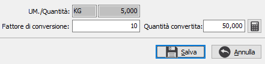

Il
pulsante consente di assegnare il fattore di conversione utilizzando la
quantità convertita (che è modificabile, ma che comunque non viene salvata)
rapportata alla quantità del rigo documento.
Il
pulsante consente di assegnare il fattore di conversione utilizzando la
quantità convertita (che è modificabile, ma che comunque non viene salvata)
rapportata alla quantità del rigo documento.Fattore di conversione nei documenti
Premendo il tasto funzione F11 sul campo unità di misura presente nei documenti e sulle varie movimentazioni, se il prodotto ha più unità di misura, si accede alla finestra relativa al Fattore di conversione; se la configurazione lo prevede sarà possibile modificare il fattore di conversione del prodotto.

La finestra mostra l'unità di misura e la quantità del rigo, il fattore di conversione eventualmente modificabile e la quantità convertita in unità di misura primaria.
Il
pulsante consente di assegnare il fattore di conversione utilizzando la
quantità convertita (che è modificabile, ma che comunque non viene salvata)
rapportata alla quantità del rigo documento.
partendo dalla quantità convertita e rapportandola alla quantità del rigo
Se non si è in modifica del documento/movimento il pulsante Salva non sarà visibile ed i dati saranno in sola visualizzazione, altrimenti è possibile apportare le modifiche, sempre che la configurazione preveda la variazione del fattore di conversione da documenti/movimenti.
Il pulsante Salva memorizza la variazione che sarà resa effettiva solo dopo il salvataggio definitivo del documento.